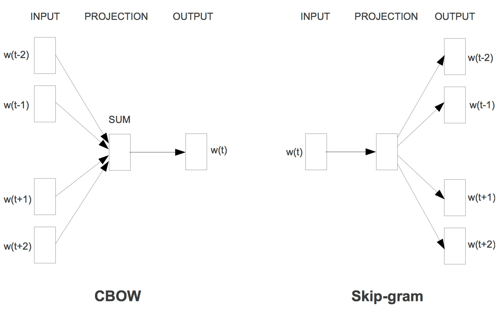

词袋模型能够把一个句子转化为向量表示，是比较简单直白的一种方法，它不考虑句子中单词的顺序，只考虑词表（vocabulary）中单词在这个句子中的出现次数。下面直接来看一个例子吧（例子直接用wiki上的例子）：
"John likes to watch movies, Mary likes movies too"
"John also likes to watch football games"
对于这两个句子，我们要用词袋模型把它转化为向量表示，这两个句子形成的词表（不去停用词）为：
[‘also’, ‘football’, ‘games’, ‘john’, ‘likes’, ‘mary’, ‘movies’, ‘to’, ‘too’, ‘watch’]
因此，它们的向量表示为：
also,football,games,john,likes,mary,movies,to,too,watch
s1 = [0,0,0,1,2,1,2,1,1,1]
s2 = [1,1,1,1,1,0,0,1,0,1]
scikit-learn中的CountVectorizer()函数实现了BOW模型，下面来看看用法：
from sklearn.feature_extraction.text import CountVectorizer corpus = [ "John likes to watch movies, Mary likes movies too", "John also likes to watch football games", ] vectorizer = CountVectorizer() X = vectorizer.fit_transform(corpus) print(vectorizer.get_feature_names()) print(X.toarray()) #输出结果： #['also', 'football', 'games', 'john', 'likes', 'mary', 'movies', 'to', 'too', 'watch'] #[[0 0 0 1 2 1 2 1 1 1] # [1 1 1 1 1 0 0 1 0 1]]
词频公式：
逆文档频率公式：
注：上式中分母+1是为了防止分母为0.
TF-IDF公式:
两种模型的结构如下图：

输入层是上下文的词语词向量
投影层对其求和（向量加法）
输出层输出最可能的 ，由于语料库中词汇量是固定 | C | 个，所以上述过程可以看成一个多分类问题。给定特征，从 | C | 个分类中挑一个。
为待训练的单词，Skip-gram模型的目标是最大化平均log概率：
这里 是训练样例的上下文长度。在实际训练时，并没有按照平均最大化 概率计算整个目标函数的梯度，而是对于每个句子的每个单词及其上下文形成 这样的元组进行最优化训练。基础的skip-gram公式使用softmax函数定义了 ：
这里 是单词的输入词向量和输出词向量，输入词向量是[0,0,0,1,0,0] * W 中的向量，输出词向量是softmax里的参数，位于输出层。 是词汇表中词语的数目。
这个公式实践中很难使用，因为 的计算复杂度与 成比例。softmax回归需要对语料库每个词语（每个类）都计算一遍输出概率并进行归一化，在几十万词汇量的语料上无疑头疼的，此时可以用层次softmax（hierarchical softmax）。
与基本的skip-gram模型不同，层次softmax输出层是一个树状softmax（一般是哈夫曼树），该树的每个叶子节点代表一个word，每个内节点是一个逻辑回归，每一个叶子节点都可以表示成由路径上的内节点的概率之积。同样，每个叶子节点都被唯一得编码成二进制数，每一位对应一个内节点的孩子结点，（一般地，内节点向左下移动则该节点被编码为0，右下移动则被编码为1）。
模型形式化定义为：令 表示单词w从根节点到叶子节点的第j个节点，令 表示路径的长度，所以 。另外，对于任意内节点n，令 表示n的任意孩子节点，令 表示1，如果x节点被编码为1，否则表示-1，如果x节点被编码为0. 那么层次softmax定义 如下：
这里 可以被证明 这说明计算 和 与 成正比。在基本的skip-gram中， 和 表示每一个单词 ，而层次softmax模型中， 代表每一个单词 的表示，而 表示每一个内节点n的向量表示。
使用负采样可以替代层次softmax模型，在模型中加入不是单词 的上下文相关的词作为负样例，一起优化。定义负采样模型的优化目标：
我的理解就是不使用softmax了，直接使用两个矩阵代表输入向量矩阵和输出向量矩阵，每一列是一个词向量，优化这两个矩阵使得目标函数最大。 这是一种对原始目标函数的近似，但是这种情况下不满足： 也就是说，它不再是一个概率分布了。
直接将上式代替skip-gram的目标中的每一个 对于大语料库一般采用 对于小语料库一般采用 需要注意的是，负采样方法还是需要两个嵌入矩阵，一个是输入矩阵一个是输出矩阵，输入矩阵用 表示，输出矩阵用 表示。
对于出现例如 "the", "a", "in" 等频繁的词时，在语料库中计算每个 时以一定概率随机丢弃删除这些词，这个概率公式为：
这里 表示单词 的频率，t是选择的一个阈值，典型的值为